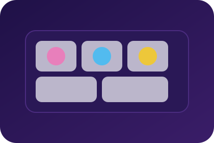

Performance
IntersectionObserver triggers fetches only when tiles are near the viewport. Blurhash placeholders keep the experience polished even on slow networks.
Front-End - UX
Responsive gallery that streams high-res imagery while showing color-aware placeholders, keyboard shortcuts, and accessible navigation.

IntersectionObserver triggers fetches only when tiles are near the viewport. Blurhash placeholders keep the experience polished even on slow networks.
Composable CSS Grid layout supports masonry, justified rows, or single-column storytelling layouts.
Keyboard navigation, visible focus states, and semantic figure/figcaption markup make every photo explorable via assistive tech.
Type-safe utilities map EXIF metadata to UI elements for quick filtering.